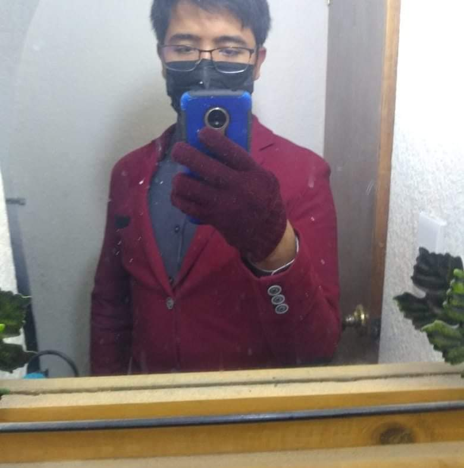

Biografia
De Ezrel Eduardo

Esta es mi autobiografia en donde contare a detalle sobre mi persona.
Para empezar mi nombre es Ezrel Eduardo Perez Miranda y naci el 14 de octubre del 2003 en la ciudad de
Mexico, mas especifico en Nezahualcoyotl.
Mis pasatiempos son jugar, escuchar musica clasica siendo asi disfrutar de cada nota musical en sinfonicas o
en opera, por lo regular juego con mis amigos cuando
tengo tiempo libre o aveces juego solo juegos que a muchos no les gusta como el age of empires, pero son
juegos que personalmente me relaja mucho en jugarlos
tengo otros pasatiempos que eh ido experimentando al tiempo que eh estado en mi universidad como ir a
entrenar mi cuerpo al gym ya que no estoy en forma.
Estudio en el Instituto politecnico de Tecamac en la ingeniera de software, actualmente estoy cursando el
segundo año de mi carrera y aunque la mayoria de los maestros
exigen bastante trabajo disfruto mucho mi carrera ya que me gusta mucho la programacion y la logica que se
necesita para programar, tambien me gusta mucho la parte
de la logica que se necesita para programar ya que es algo que me gusta mucho y me relaja mucho pensar en
como resolver un problema.
Mi familia esta conformada por 4 personas, mi madre, mi padre, mi hermana y yo, mi madre se llama
Guillermina Miranda y es quiropractica, mi padre se llama Eduardo Perez
y el es medico homeopata, mi hermana se llama Ingrid Naomi y ella actualmente esta cursando la universidad
de medicina en la Escuela libre de homeopatia en la ciudad de Mexico.
Mis metas a corto, mediano y largo plazo son:
A corto plazo: Terminar la carrera de ingenieria de software y conseguir un trabajo en una empresa de
software.
A mediano plazo: Tener la economia suficiente para poder sustentar mi vida y poder conocer el
mundo.
A largo plazo: Tener mi propia empresa de software, tener mi propia casa y tener mi propia
familia.